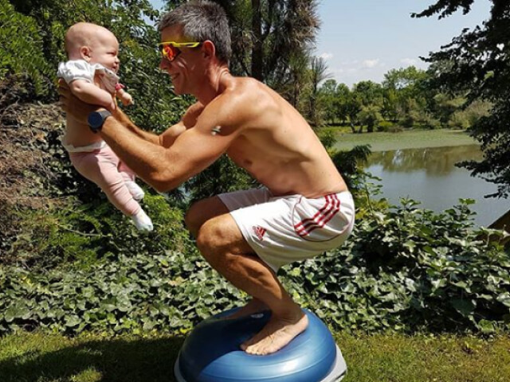
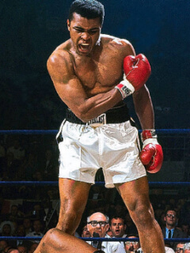
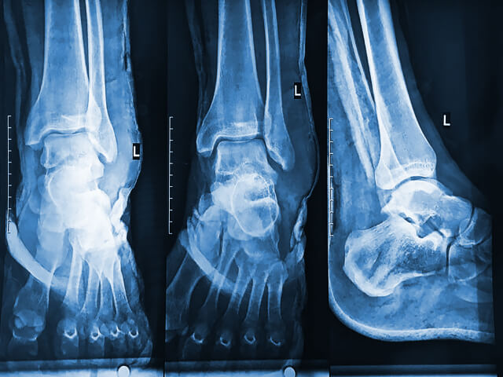
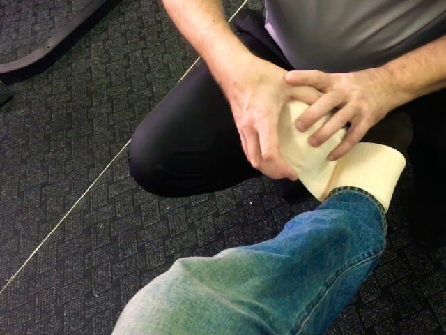

"Cómo evitar que el dolor se interponga en el camino hacia un cuerpo deportivo"
Hola a todos los nuevos por aquí. Me llamo Adrián. Quizás algunos de vosotros sigáis mi blog sobre el boxeo, pero esta es la primera vez que decidí contar la historia sobre cómo comenzó todo y cómo por poco termina después de mi primera lesión. No fueron los médicos quienes me ayudaron, sino un producto del que os hablaré a continuación.
Me metí en el boxeo a los 38 y no me avergüenzo de ello
Cuando era niño, practiqué todo tipo de actividades extraescolares desde atletismo hasta fútbol. Los entrenamientos me regalaron una buena forma física para toda la vida, pero con la llegada de la universidad, mi amistad con el deporte terminó y comenzaron los malos hábitos. A los 30 años, ya había comenzado a notar mi barriga, pero no le daba importancia. Fui ganando peso gradualmente, lo único que aumentaba era el volumen de mi cuerpo.
Cuando tenía 38 años, comenzaron los problemas en la familia. Mi esposa me insinuaba que fuese al gimnasio. Entendía lo que estaba pasando, pero no sabía por dónde empezar. Ya no me interesaba levantar pesas porque desde pequeño había preferido los deportes que requieren velocidad y coordinación. En una de las fiestas de mi empresa, me dejé llevar y le conté mi historia a un colega. Él me dijo que hace poco había comenzado a hacer boxeo y que le faltaba un compañero para entrenar en la misma categoría de peso.
Conocía muchas historias de que algunos hombres comenzaban a practicar artes marciales incluso a los 50, así que acepté sin dudarlo.
¡La lucha más difícil es cuando tienes que pelear con la pereza con tal de alcanzar la felicidad!
- Mohammed Ali
Leer más
Una lesión tonta casi me saca de la rutina
Durante los primeros seis meses, estuve satisfecho con todo: mis brazos y piernas se fortalecieron, el peso se derritió ante mis ojos y comencé a sentirme orgulloso de mí mismo. En la siguiente sesión de entrenamiento, mientras saltaba la comba, sentí molestias en el tobillo. No le di mucha importancia a eso hasta que unos días después se repitió. Con el aumento de la carga, la pierna comenzó a doler tanto que después del calentamiento ya era imposible pisar el suelo. De camino a casa, el dolor se intensificó y, unos días después, ya estaba en la cama.
Mi entrenador era mi última esperanza
Falté a los entrenamientos varias semanas. En el trabajo, le aconsejé a mi colega que se buscara un nuevo compañero de combate, y este se lo contó todo al entrenador. Esa noche, me pidió que me acercara al gimnasio para darme algo.
Después de verme y examinar mi pierna envuelta en una venda elástica, dijo que la cosa tenía solución: "Esto le pasa a todo el mundo, y no tienes que llenarte de pastillas". Se fue a su despacho y me dio un pequeño tubo brillante con un gel especial en el que estaba escrito . Dijo que el gel lo puso de pie en una semana y con lesiones más graves. Después de las pastillas prescritas por el médico, empecé a desconfiar de todos los fármacos. Mi entrenador aseguró que su composición era natural y que no tenía que preocuparme por los efectos secundarios.
Cómo volví a ponerme de pie
Usaba el gel todos los días por la mañana y por la tarde. Justo después de aplicarlo, fijaba la pierna con una venda elástica. Huele a eucalipto, se siente un poco de frío al principio, pero un par de minutos después, ya llega el calor. El gel se absorbe rápidamente y no sientes las manos pegajosas ni la zona de la lesión después de usarlo. El efecto se siente a los primeros minutos, así que puedes seguir haciendo tus cosas. Aproximadamente una semana después, el dolor de tobillo desapareció casi por completo y dejé de usar el vendaje. Dos semanas después, olvidé por completo que hace poco no podía moverme normalmente. Por cierto, no solo ayuda a las articulaciones, sino también a los músculos. Lo aplico todo el tiempo antes de entrenar: tanto para calentarme como para protegerme de lesiones.

Desde entonces han pasado cuatro años, y ya tengo 42. Participo regularmente en competiciones amistosas entre clubes de boxeo. He vuelto a correr y no quiero parar en lo alcanzado. El secreto del éxito es simple: cuando te encuentras con obstáculos, debes buscar soluciones y no usarlos como excusas. Durante todos estos años, he tenido éxito solo gracias a la ayuda de mi entrenador. Por lo tanto, sé de primera mano que, a veces, el conocimiento que tiene uno y las recetas interminables de los médicos no son suficientes.
El deporte resolvió todos los problemas en mi familia
Como mencioné anteriormente, he comenzado a correr de nuevo. ¡En compañía! Mi esposa también se ha aficionado al deporte. Ahora organizamos carreras familiares por la mañana en el parque. La distancia habitual es de cuatro kilómetros. Antes de comenzar, hacemos un calentamiento y usamos por mi propia experiencia. Por lo tanto, espero poder ayudaros con este post al igual que mi entrenador me ayudó a mí hace cuatro años. Pido aquí , el enlace lo compartió mi entrenador. Me cojo varios envases a la vez para todo el gimnasio para que siempre lo tengamos en el botiquín.
¿Va bien para la espalda? No hago deporte, pero en el trabajo tengo cargas constantes en los lumbares.
Por supuesto. Por cierto, también se lo recomendé a mi padre porque tenía la espalda muy jodida. Ni siquiera podía sostener a su nieto en brazos. Antes no entendía nada de composiciones, pero como lo probé yo mismo, le hablé de . Ahora mi padre no deja a su nieto ni un segundo, creo que muy pronto va a salir a correr con nosotros.
Bueno, si empiezas a practicar deportes a los 40, entonces el tobillo no será lo único que te duela jeje. ¿Tal vez deberías haberlo pensado mejor antes?
Es cierto lo que decís, realmente ayuda. Tengo 30 años y es el segundo año que levanto pesas. Tan pronto como comencé a ir al gimnasio, acabé yendo al médico porque me dolían muchísimo las rodillas. Los chicos del gimnasio me dijeron que usara algún gel con Spongilla. Probé muchos, pero solo este me ayudó. Tiene unos aceites y componentes auxiliares en la composición. No se puede encontrar en las farmacias, así que yo también lo compro a través de esa página web.
¡Lo mejor del entrenamiento es el dolor muscular que tienes después!
Soy entrenadora de baile y les digo a todas mis chicas que calienten bien. ¡Después de unos buenos estiramientos, seguro que no os dolerá nada! En cuanto a los médicos, es cierto que recetan fármacos que desarrollan adicción.
Todo eso no está mal, pero no deberías haber dejado el vendaje. Hay que cuidarse.
¡Lo usé por un tiempo y se me acabó rápidamente! El tubo es pequeño.
¡Tienes que ahorrar más!
Llevo leyendo tu blog desde hace mucho tiempo y pensaba que era el único con estos problemas. Cuando empieza a dolerme algo, me asusto mucho. Lo que hace la edad...